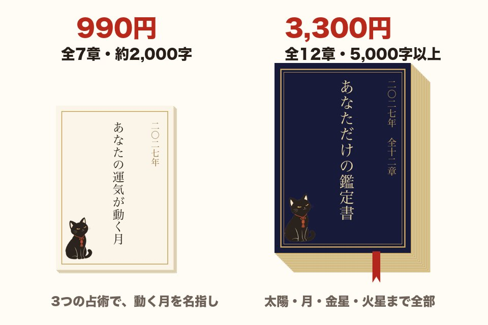

あなたのフルネームと生年月日を教えてください。
星と数字と九星で、あなただけを読みます。
あなただけの2027年を、
くろみつが読みます
西洋占星術 × 数秘術 × 九星気学 ＋ 天文計算
- 無料3つの占術であなたの星を読む
- 無料18の質問で、鑑定書の第1章を全文
- 990円〜運気が動く月まで、名前入りの鑑定書に
あなたのフルネームと生年月日を教えてください。
星と数字と九星で、あなただけを読みます。
西洋占星術 × 数秘術 × 九星気学 ＋ 天文計算
18の質問に5段階でこたえると、くろみつが「あなたのもうひとつの顔」「今の心のかたち」まで読んで、鑑定書の第1章を書きます。あなたを守る「運命の一文字」もわかります。3分ほどです。

どちらもPDFでお届けします（絵はイメージです）。
 お届けはPDF（絵はイメージ）
お届けはPDF（絵はイメージ）恋も仕事も、2027年こそ。月ごとに知りたい。
2027年のあなたを全部読む【全12章】あなただけの鑑定書
18のこたえと悩みまで読み込む本格鑑定（全12章・PDF）
この鑑定でわかること
1回3,300円（税込）・月額ではありません／ご注文から3日以内にメールでお届け
全12章で、私の2027年を全部読む イメージ（書は見本）
イメージ（書は見本）迷ったときに、背中を押してくれる一文字がほしい。
2027年、あなたを守る一文字は何？【全12章の鑑定書＋書家・夢香の書の待ち受け】
全12章の鑑定書と、書家・夢香が書く「あなたを守る一文字」の待ち受け
この鑑定でわかること
1回11,000円（税込）・月額ではありません／ご注文から5日以内にメールでお届け
私を守る一文字を書いてもらう占いは毎日を前向きに過ごすためのヒントで、効果を保証するものではありません。